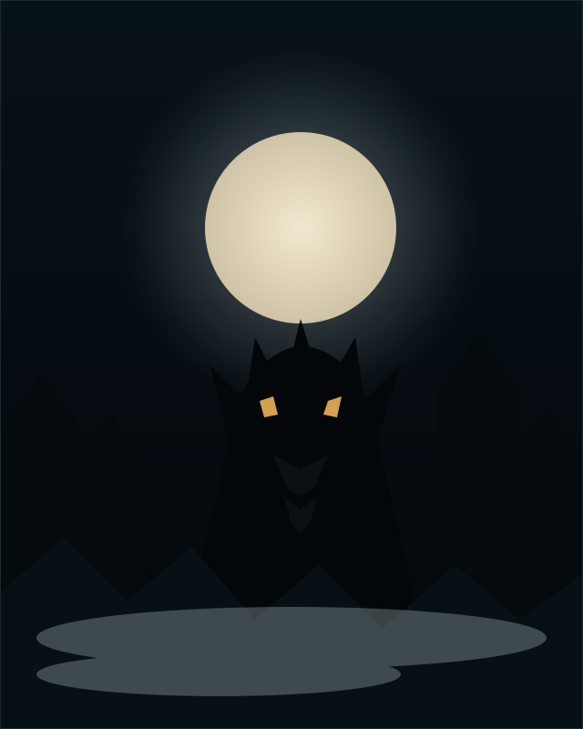
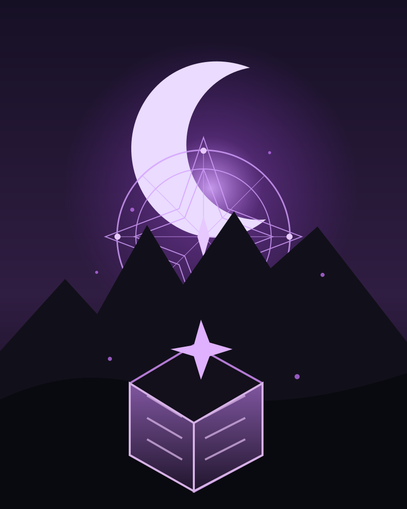
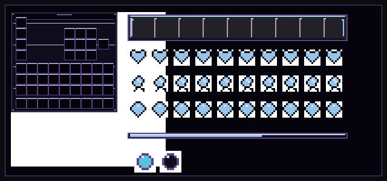
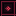
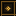
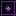
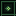

Un servidor de supervivencia sobrenatural donde vampiros, hombres lobo, cazadores, brujos y los Reflejos de El Espejo comparten un mundo que cambia contigo. Todavía no está abierto al público: esto es una ventana a lo que ya estamos construyendo.
No es un lanzamiento. Es el comienzo de algo que estamos cuidando.
SanguinarisMC nace de una idea sencilla: que la noche de Minecraft pueda sentirse como un mundo propio, con facciones que recuerdan, NPCs que viven y decisiones que dejan huella.
Lo que ves en esta página no es una promesa de fecha ni una tienda. Es una selección honesta de lo que ya funciona en pruebas internas: facciones, contratos, refugios, NPCs, clima, diplomacia, asedios y habilidades.
El servidor sigue en pruebas cerradas y no tiene acceso público. La única entrada por ahora es una beta de 3 a 5 cupos; cuando abra al público, se anunciará aquí. Mientras tanto, puedes leer el mundo, conocer los cinco caminos y descargar el dossier.
Cinco caminos
La noche te va a preguntar quién eres.
Cada facción cambia tu recurso, tus habilidades, tu forma de moverte y la manera en que el mundo te mira. La elección no es un disfraz: es una forma de jugar.
01 · La noche como refugio
Vampiros
Reinan cuando el sol se va. La sangre es poder y también hambre: administrarla es parte de la elección.
Aura de oscuridad contra rivales de menor rango.
Visión nocturna, caída segura y vuelo de murciélago.
“La noche no se posee. Se administra.”

02 · La manada como fuerza
Hombres lobo
La forma lupina no espera a la luna llena. Con el rango suficiente, el cuerpo cambia y el equipo se queda atrás.
Transformación por rango y cacerías de manada.
Aura de velocidad, fuerza herida y caída resistente.
“La luna no manda. Recuerda.”
03 · La vigilia como deber
Cazadores
Miran lo que otros prefieren no ver. Su fuerza está en la preparación, la resistencia y no llegar solos.
Sellos de detección y aura de resistencia.
Contratos, investigación y presencia en el mundo.
“Alguien tiene que quedarse despierto.”

04 · El saber como poder
Brujos
Maestros de lo arcano, convierten la noche y los ciclos lunares en una fuente de poder para sus rituales.
Concentración arcana que crece con mayor fuerza durante la noche.
Magia ritual, hechicería y equipo propio de facción.
“Todo poder deja una marca.”

05 · El Nether como reflejo
El Espejo
Los Reflejos abren umbrales temporales para incursiones limitadas al Nether. Su poder gira en torno a las esquirlas y a cruzar entre mundos sin dejar una puerta permanente.
Umbrales temporales e incursiones con límite semanal.
Recurso, habilidades, objetos y arte de interfaz propios.
“Nada cruza intacto al otro lado.”
El mundo
La noche no es el final del día. Es su otra cara.
Cuando la última luz del alba se apaga, el valle cambia de dueño. Los pactos antiguos se despiertan, las caravanas buscan refugio y las criaturas que la gente llama leyenda empiezan a tomar decisiones.
No hay un bando inocente. Los vampiros necesitan sangre para no perderse a sí mismos. Los hombres lobo necesitan espacio para una parte de ellos que no cabe en una casa. Los cazadores necesitan respuestas para un mundo que se niega a quedarse quieto.
En SanguinarisMC, esas necesidades se cruzan. Una caravana desaparece. Un rumor llega a la Vigilia. Una tormenta que no debía existir cubre el cielo. Las facciones recuerdan, y lo que recuerdan cambia la forma en que se tratan.
“El mundo no está en guerra porque alguien lo decidiera. Está en tensión porque todos tienen algo que perder.”
01
La sangre recuerda.
Lo que haces con tu hambre deja una huella que otros pueden encontrar.
02
La luna escucha.
El clima y la noche no son decorado: inclinan la balanza de quienes saben leerlos.
03
La vigilia no duerme.
Ninguna facción puede permitirse ser la única que mira hacia otro lado.
Lo que ya respira
Una base jugable. No una promesa vacía.
Estas piezas ya fueron probadas en un servidor interno. No son la lista completa del lanzamiento ni una fecha encubierta: son el terreno sobre el que seguimos construyendo.
01
Contratos con carácter
Los NPCs no son adornos: ofrecen encargos, pagan Marcas y recuerdan quién cumple. Cazar, recolectar, entregar o llegar a un destino.
02
Refugios que importan
Un núcleo, un territorio y un grupo. Los refugios se reclaman, se mejoran y se protegen. No son solo un lugar para volver.
03
NPCs con rutina
Comerciantes, guardias y exploradores nativos con horarios, diálogos, comercio y memoria. El mundo sigue vivo cuando no estás mirando.
04
Un clima con memoria
La tormenta no llega por azar. El clima cambia con los eventos y con la facción que más presencia tiene en el mundo.
05
Política entre facciones
Siete estados diplomáticos, desde la neutralidad hasta la guerra. Los incidentes pueden tensar relaciones, y la guerra abre asedios territoriales.
06
Habilidades y build
Habilidades activas, pasivas, mejoras por rango, prestigio y una lectura de tu build según el equipo que llevas puesto.
07
La interfaz también pertenece a tu facción
Actionbar de recurso, emblemas pixel-art, chat, tab, scoreboard y GUIs con identidad propia. Los glifos requieren el resource pack opcional.
08
Metas que se comparten
Los contratos de cada miembro acercan a toda su facción a un objetivo semanal con hitos y un recuerdo cosmético, sin inflar la economía.
Probado en servidor de pruebas. El equilibrio, la escala y la experiencia pública siguen en desarrollo.
Notas del parche
La noche cambió. Esto es lo que hay de nuevo.
Registro de las iteraciones internas desde enero de 2025, sobre Minecraft 1.21.4. Elige una versión en la pestaña o ciérrala cuando ya la hayas leído: lo que se añadió, lo que se ajustó y lo que se corrigió, sin detalles internos.
Notas del parche 0.10.12
Las notas anteriores a 0.10.8 se conservan en español.
Parche interno 0.10.12
El Espejo abre un umbral
4 de noviembre de 2026 Build interna
Añadido
El Espejo ya es una quinta facción jugable en fase base. Los Reflejos tienen recurso, habilidades, objetos, identidad visual y una incursión temporal al Nether con límite semanal; aún no es una facción completa.
Variantes de resource pack para siete perfiles. Se regeneraron y empaquetaron las cinco facciones jugables, Miasma y la variante neutral, con modelos y texturas propios.
Diálogos de NPC en inglés. Cada categoría admite traducción y, si falta una, usa el diálogo español correspondiente.
Ajustado
Música de combate menos sensible a la distancia. El estado se conserva durante ataques a distancia y termina tras inactividad o cambio de mundo. La reproducción aún debe probarse con clientes reales.
Más mensajes y estados de comandos localizados. Rango, linaje, rituales, contratos, tiendas, líder, encuentros, asedios y ayuda ya usan español o inglés.
Verificación y límites
189 pruebas automatizadas pasan. También se validaron referencias de modelos/texturas y glifos de los siete paquetes.
Sin prueba visual ni de audio en cliente real. HUD y música necesitan todavía una sesión de juego; el balance económico requiere datos de una prueba jugada.
El EspejoIncursiones NetherMúsica de combateLocalización
Build interna para pruebas. La base de El Espejo está incompleta y no debe presentarse como contenido final.
Parche interno 0.10.11
La noche empieza a reflejarse
Iteración interna Build de desarrollo
En progreso
Primeros cimientos de El Espejo. Se comenzó a preparar la quinta facción y su incursión temporal al Nether; el contenido todavía no estaba completo.
Trabajo de presentación por facción. Continuó la preparación del HUD, los glifos y los recursos visuales, junto con ajustes de lectura del minimapa.
Ajustado
Música de combate y localización. Continuaron los cambios para estabilizar la entrada/salida de combate y ampliar los textos en inglés y español.
Estado
Versión intermedia de desarrollo. La implementación, el pack de El Espejo y la experiencia visual requerían todavía más trabajo y pruebas en juego.
El EspejoHUDMinimapaLocalización
Estas notas resumen el estado intermedio registrado durante el desarrollo; no representan una versión final probada en cliente.
Parche interno 0.10.10
Cada jugador elige su voz
3 de noviembre de 2026 Build interna
Añadido
Idioma propio por jugador. Cada persona cambia el idioma de lo que ve con /sang idioma o desde el menú, sin depender de una configuración global.
La elección te sigue. Tu idioma se guarda y se recupera al volver a entrar; la consola y quien nunca eligió usan el idioma por defecto.
Mascotas opcionales. Si el servidor usa MCPets y MythicMobs, /sang mascotas abre el menú de mascotas. Si no están, todo lo demás sigue igual.
Cambiado
Los avisos llegan en el idioma de cada cliente. Menús, títulos de muerte, marcador y mensajes del chat respetan la elección de cada jugador, aunque estén conectados a la vez.
Los Vínculos funcionan sin mascotas. Aplican sus efectos por sí solos; la mascota visible es un extra cuando el servidor la habilita.
Estado
173 pruebas automatizadas pasan. También se comprobó con dos jugadores conectados a la vez: cada uno recibió sus mensajes en su idioma.
La integración con mascotas es opcional. Se puede activar o desactivar sin desinstalar nada y sin romper los Vínculos.
Idioma por jugadorMascotas opcionalesVínculos
El servidor sigue en pruebas cerradas. Cada jugador puede cambiar su idioma cuando quiera.
Parche interno 0.10.9
Dos idiomas para una misma noche
25 de octubre de 2026 Build interna
Añadido
Inglés completo en el plugin. Todos los mensajes del juego tienen versión inglesa y la instalación elige idioma con language: es o language: en.
Cambio en caliente./sang admin recargar aplica el idioma sin reiniciar el servidor. Si una traducción no existe o está incompleta, se completa desde el español y el registro lo avisa.
Portada bilingüe. Este sitio incorpora un selector ES/EN que recuerda tu elección en el navegador.
Cambiado
Los textos del servidor ya no dependen del código. Traducir un idioma nuevo es copiar el archivo de mensajes y cambiar los valores, sin tocar claves ni variables.
Estado
173 pruebas automatizadas pasan, incluidas las que comparan claves y variables entre español e inglés.
La traducción cubre la interfaz y los mensajes. El contenido narrativo que escriban los administradores sigue siendo responsabilidad de cada servidor.
IdiomasInglésRecarga en caliente
El servidor sigue en pruebas cerradas. Las notas anteriores a 0.10.8 se conservan en español.
Parche interno 0.10.8
Vínculos: una presencia que camina contigo
11 de octubre de 2026 Build interna
Añadido
Cinco Vínculos. Carmesí, Salvaje, Vigilante y Umbrío acompañan a cada facción; Errante está abierto a cualquiera.
Menú de Vínculos. Muestra el vínculo activo, su coste y la espera antes de volver a invocarlo.
126 mascotas con progresión. Cuatro niveles, comida propia y tres roles: montura, combate y compañía. Los vehículos quedaron fuera.
Cambiado
Invocar tiene un precio. Consume esencia de tu facción (Errante usa esencia Sanguinaris) y abre una espera de 90 segundos.
El vínculo se mantiene. El efecto se renueva mientras siga activo y se recupera al volver a entrar.
Estado
170 pruebas automatizadas pasan. La invocación, la espera, el disipado y el rechazo de un vínculo desconocido se comprobaron en vivo.
Las mascotas necesitan MCPets y MythicMobs. La primera carga debe revisarse en el servidor de pruebas.
VínculosMascotasProgresión diariaPersistencia
El sistema busca que cada sesión deje algo en marcha para la siguiente. El servidor sigue en pruebas cerradas.
Parche interno 0.10.7
Una interfaz de verdad, no solo glifos
27 de septiembre de 2026 Build interna
Añadido
Paquetes gráficos completos para cada facción. Vampiros, Hombres lobo, Cazadores, Brujos y Miasma tienen su propia paleta para salud, hambre, armadura, respiración, hotbar y experiencia.
Fondos pixel-art para inventario y menús de cofre. El cliente recibe la variante que corresponde a su facción.
Cambiado
El resource pack cambia según la facción. Al elegir o cambiar de facción, el plugin solicita su paquete; al rechazarlo, se conserva la interfaz vanilla.
El terreno del mapa se dibuja desde su superficie superior. Varias muestras por píxel hacen visibles las copas y la vegetación al alejar el zoom, sin cargar chunks remotos.
Corregido
Las manchas grises del mapa ya no ocultan la vegetación. El color dominante de varias muestras evita que una sola muestra de suelo convierta una copa en roca.
Se comprueban las dimensiones y presencia de los sprites vanilla 1.21.4. Incluye estados de corazones, comida, aire y armadura por variante.
HUD por facciónHotbar y corazonesInventario pixel-artMinimapa
Los sprites reemplazables conservan su posición vanilla; Paper no puede mover la HUD ni el chat. El número de nivel es texto y no tiene una textura independiente. Los packs son opcionales y también incluyen Miasma y una variante neutral.
Parche interno 0.10.6
La identidad ahora también se dibuja
6 de septiembre de 2026 Build interna
Añadido
Paneles y marcos pixel-art para las GUIs. Cada facción tiene piezas de borde, esquinas y relleno; el pack también contempla a Miasma.
Arte gráfico propio para HUD y chat. El icono de recurso de la actionbar y el ornamento de mensajes cambian según la facción.
Cambiado
El plugin solicita el resource pack al entrar. Los modelos gráficos de las GUIs solo se aplican tras confirmar que el cliente cargó el paquete; si se rechaza, se conservan los iconos vanilla.
Límite técnico
El chat y la HUD vanilla permanecen en su sitio. Minecraft no permite que un plugin Paper mueva esas superficies ni pinte fondos por jugador; el chat usa glifos decorativos, no un fondo reemplazable.
161 pruebas automatizadas pasan. Los PNG, los modelos y las definiciones de glifos se validan en el paquete.
Vampiros

Hombres lobo
Cazadores

Brujos

Miasma

Paneles gráficosHUD por facciónChat temáticoResource pack 1.21.4
Un pacto semanal por facción. Los contratos de todos sus miembros suman hacia una meta compartida; quienes contribuyen pueden reclamar un sello cosmético al completarla. No entrega Marcas.
Emblemas originales para los cuatro caminos. Un resource pack opcional incluye glifos pixel-art de Vampiros, Hombres lobo, Cazadores y Brujos, además de un glifo para Miasma.
Cambiado
La identidad de facción llega a más superficies. La actionbar muestra el recurso con su emblema; los menús, chat, tab y scoreboard comparten colores, rangos y ornamentos.
El ascenso orienta, no abruma. La guía de rango también explica cuándo se habilita el liderazgo de facción.
Corregido y verificación
La protección ya no consume una Esencia Sanguinaris cuando está llena. El margen de sincronización evita gastarla sin añadir tiempo útil.
160 pruebas automatizadas y 34 comprobaciones con cliente pasan. La suite en Purpur 1.21.4 verificó reclamos, menús, recetas, combustible, muerte y resistencia del núcleo a explosiones.
Un límite técnico queda claro. El pack viste la interfaz que permite el servidor; no mueve la HUD vanilla ni reposiciona el chat.
HUD temáticaResource packMeta cooperativa160 pruebas34 checks en vivo
Los glifos necesitan el paquete para verse correctamente; sin él pueden aparecer como caracteres ausentes. Descargar resource pack 0.10.5. El servidor sigue en pruebas cerradas.
Parche interno 0.10.4
Un refugio también es del grupo
12 de julio de 2026 Build interna
Añadido
Los beacons de grupo tienen un alcance propio. Cada grupo mantiene su beacon y sus miembros pueden encontrarlo sin mezclarlo con el resto de la facción.
Cada linaje tiene su propio beacon. Los refugios de linajes distintos ya no se reemplazan entre sí.
Cambiado
Los beacons se limpian sin acortar la duración de uno recién colocado. El temporizador anterior ya no borra el reemplazo por accidente.
Corregido
Un jugador de la misma facción, pero fuera del grupo, ya no puede usar un beacon de grupo. También se rechazan los usos de linaje sin pertenecer a uno.
BeaconsGruposPrivacidad de facción155 pruebas automatizadas
Build verificada en Purpur 1.21.4. Se comprobaron los permisos de miembro y no miembro del grupo en vivo.
Parche interno 0.10.3
Una tienda que sí cambia
14 de junio de 2026 Build interna
Añadido
La categoría de cuernos gana variedad real. Ahora el mercado elige seis entre ocho ofertas y cada cuerno tiene un sonido vanilla propio.
El premio del gacha se reconoce a simple vista. El Tótem de la Vigilia recibe brillo y lore para distinguirlo del tótem de compra directa.
Cambiado
Los saltos de rango muestran todos los desbloqueos intermedios. Si una recompensa hace subir varios rangos, las guías aparecen agrupadas en un aviso en vez de enseñar solo el rango final.
Corregido
Se evita omitir tutoriales al avanzar más de un rango de golpe. Los desbloqueos de cada nivel superado vuelven a quedar visibles.
Build verificada en Purpur 1.21.4. Las 151 pruebas automatizadas pasan y el servidor carga las nueve categorías de rotativa y los 24 premios del gacha.
Parche interno 0.10.2
Una Grieta que hay que cerrar
17 de mayo de 2026 Build interna
Añadido
La Grieta ahora tiene una condición de victoria. El jefe debe ser derrotado antes de que venza el tiempo; completar el temporizador ya no entrega premios.
El botín reconoce la cooperación. Las Marcas de la Grieta, las Marcas base del jefe y su renombre se reparten proporcionalmente al daño aportado por los combatientes conectados. La persona con mayor contribución obtiene una esencia de su facción; el último golpe ya no concentra una segunda recompensa.
El encuentro expira limpiamente. Si el jefe no cae, la Grieta se cierra sin recompensa; una invocación fallida tampoco inicia un evento ni deja un premio programado.
Los jefes de patrulla tienen fases de combate. Al cruzar el 66 % y el 33 % de vida, cambian de ritmo con señales visuales y sonoras y aceleran sus habilidades.
Cambiado
La duración es un límite del combate. El jugador ya no recibe el premio por ser quien inició el temporizador; la recompensa depende de vencer al jefe.
Corregido
Se elimina la recompensa automática al pasar el tiempo. Esto evita cobrar la Grieta sin combatir y hace que su conclusión dependa de la victoria.
GrietasJefes por fasesRecompensa cooperativa150 pruebas automatizadas
Verificada en Purpur 1.21.4. Las 150 pruebas automatizadas pasan; también se comprobó en vivo la victoria con reparto de recompensas y la expiración sin pago.
Parche interno 0.10.1
La noche se vuelve más legible
19 de abril de 2026 Build interna
Añadido
Un mapa más claro. El render pasa a 128×128, usa una paleta de terreno más cercana a Minecraft y marcadores contrastados que reflejan la facción. Evita cargar chunks lejanos y se actualiza con menos frecuencia cuando no te mueves.
Más orientación al subir de rango. Los avisos muestran las opciones que se desbloquean para tu rango y facción, como habilidades, forja, contratos o diplomacia.
Más opciones en los mercados. Se amplían los catálogos generales y de facción, incluyendo una oferta ritual para Brujos.
El gacha acompaña mejor sus tiradas semanales. La garantía de premio medio predeterminada llega en tres tiradas; la piedad de premio alto permanece en doce.
Recetas de esencia comprobadas. La receta de seis panes entrega la Esencia de la Vigilia y devuelve el trigo en una prueba focal en Purpur 1.21.4.
Cambiado
Una identidad por facción. Tab, título del scoreboard y actionbar usan el tema de color de la facción.
El mercado rotativo limita las compras antes de entregar. El stock se reserva en SQLite antes del cobro; si no se puede cobrar, se intenta cancelar esa reserva.
Las configuraciones existentes se respetan. Las claves nuevas de tienda, gacha y rotación se incorporan sin sobrescribir valores personalizados.
Corregido
Las compras rápidas ya no dependen de un registro tardío del stock. El límite se aplica en SQLite antes de procesar el pago y entregar el objeto.
El mapa ya no tapa el terreno con un título. También deja de consultar bloques en chunks que no están cargados.
Empaquetada para Purpur 1.21.4. Las 144 pruebas automatizadas pasan; el arranque y la experiencia integrada de esta build aún no se han verificado en vivo. No incluye texturas nuevas ni reposiciona la HUD vanilla o el chat.
Parche interno 0.10.0
La Vigilia también protege
22 de marzo de 2026 Servidor de pruebas
Añadido
Los refugios ahora se alimentan. Cada facción transforma sus materiales en esencias; seis esencias pueden condensarse en una Esencia Sanguinaris.
La protección tiene capacidad y duración. El nivel del territorio define cuánto combustible admite. El menú muestra su estado y permite abastecerlo; sin esencia, la protección queda inactiva.
Una guía para dar los primeros pasos. Los tutoriales acompañan la primera noche y enseñan a reclamar territorio, abrir sus menús y acercarse a los nodos.
La noche se siente más cerca. Un latido acompaña la salud crítica y las muertes importantes reciben líneas propias y un título al reaparecer.
Cambiado
Un refugio nuevo no nace protegido para siempre. Hay que mantenerlo con esencias, y su combustible se consume con el tiempo.
Las recetas dejan algo a cambio. La materia prima recuperada acompaña la creación de esencias para que abastecer el núcleo forme parte de la economía de cada facción.
Corregido
Las mesas vacías ya no rompen la preparación de recetas. La matriz de crafteo admite espacios vacíos y el resultado se puede verificar en la mesa.
Las muertes cuentan lo que pasó. El mensaje propio sustituye al texto genérico y se conserva al reaparecer.
Esencias de facciónProtección territorialTutoriales guiadosLatido crítico
Versión interna para pruebas en Purpur 1.21.4. El servidor aún no está abierto al público y el equilibrio puede cambiar.
Parche interno 0.8.0
El taller de las facciones
1 de febrero de 2026 Servidor de pruebas
Añadido
El catálogo crece. Ahora hay sesenta y cinco piezas forjables: tres familias de arma por facción, ocho piezas de armadura y nueve reliquias. El menú separa Armas, Armadura y Reliquias para que nadie se pierda entre páginas.
Cada facción elige su filo. Los vampiros forjan filo, dagas gemelas y guadaña; los hombres lobo, hacha de jauría, garras y maza; los cazadores, arco largo, ballesta y estaca; los brujos, daga ritual, cetro y hoz. No son nombres distintos sobre el mismo golpe: cambian alcance, ritmo y forma de pelear.
Mecánicas propias. Las piezas Mayores ya no se limitan a encantamientos. Sangrado que sigue manando, robo de vida, ejecución sobre heridos, tajos en área, marcas de caza, maldiciones devueltas, espinas, escudos de sangre y guardias rituales entran al combate. Son dieciocho formas de pelear, repartidas según la identidad de cada facción.
Auras sobre la pieza. Las armas y armaduras Mayores llevan su propia aura de partículas: una forma, un color y una segunda partícula propios de la facción. El aura envuelve el filo o la armadura, nunca al jugador, y se aviva al mejorar la pieza.
Sets de cuatro piezas. Corte Carmesí, Piel de la Manada, Vigilia de Acero y Umbral Ritual. Reunir las cuatro piezas de un set concede su bono. El menú muestra cuánto llevas y qué te falta.
Reliquias de manada. Los hombres lobo pueden llevar un amuleto y un collar al mismo tiempo, cada uno en su ranura, y sus efectos solo despiertan transformados. Hay tres collares y tres amuletos para elegir; el menú muestra el que llevas y lo retira con un clic.
Cambiado
Menor y Mayor tienen papeles distintos. La Menor enseña el camino: atributos limpios y nada más. La Mayor cambia las reglas: gana mecánicas propias y aura. Los vampiros que quieran jugar sin efectos especiales siguen teniendo piezas Menores completas.
El taller se ordena por categorías. La forja dejó de ser una sola pared de botones: ahora se entra por Armas, Armadura o Reliquias, y cada lista muestra coste, rango, set y ranura antes de forjar.
Mejorar una pieza la cambia de verdad. El nivel de forja ya no solo sube atributos y encantamientos: también intensifica las mecánicas y aviva el aura de las piezas Mayores.
La forja guarda memoria. Quien ya tenía piezas del catálogo anterior las conserva: el taller reconoce los nombres viejos y los traduce al nuevo sin pedir nada a cambio.
Corregido
Un amuleto y un collar, no dos de cada. Las reliquias de manada ocupan su ranura de verdad: si ya llevas una, la segunda espera en el inventario.
Las piezas de pecho renombradas siguen reconociéndose al cargar el servidor, con su nivel de forja y sus efectos intactos.
El menú de reliquias distingue una ranura vacía de una ocupada y permite retirar la pieza sin pasar por comandos.
65 piezasFamilias de armaMecánicas propiasAuras de facciónSets de 4 piezasReliquias de manada
Sigue sin haber acceso público ni fecha de lanzamiento. Todo esto se probó en un servidor interno; el equilibrio puede cambiar.
Parche interno 0.7.0
La sangre manda
14 de diciembre de 2025 Servidor de pruebas
Añadido
Botellas de sangre. Golpear o matar deja sangre embotellada. Cada botella guarda hasta diecinueve unidades y, al beberla, sacia a un vampiro como ninguna comida puede hacerlo.
Sangre con memoria. La sangre arrancada a un jugador recuerda de dónde viene: beberla concede Fuerza, Velocidad y un don extra según la build de quien la derramó. Cuanta más sangre lleva la botella, más dura el efecto.
Ofrenda de sangre. Con /sang v ofrecer un mortal entrega entre una y diecinueve unidades a un vampiro cercano a cambio de su propia vida. Un vampiro también puede ofrecer de su reserva. Nadie da más de lo que tiene ni más de lo que el otro puede recibir.
Jefes de patrulla. Siete amenazas despiertan de una en una: la oveja carmesí, el coloso de asedio, el corazón de brasas, la bruja del pantano, la tejedora, el invocador de la vigilia y el verdugo. Cada una pelea distinto, anuncia su llegada y premia al mayor daño.
Música de cacería. Cuando un jefe despierta, Pigstep suena solo para quienes lo enfrentan. Aléjate y la música se apaga: el resto del servidor no la escucha.
Voces del encuentro. Los enemigos de facción ya hablan durante el combate, solo con los suyos que están cerca y sin repetir la misma frase una y otra vez.
Cambiado
El hambre ya no es igual para todos. Los hombres lobo solo comen carne cruda, y esta alimenta más que la cocinada; la carne podrida les llena sin envenenarlos. El resto de facciones come como siempre.
Los vampiros pueden probar la comida, pero ya no les llena: su barra solo sube con sangre. Comer deja de ser una forma de sobrevivir y pasa a ser un gesto.
La sangre es recurso de combate, no moneda: no se compra ni se vende, se derrama, se transporta y se comparte.
La Masquerade respeta a los suyos. Los vampiros enmascarados ya no atacan a otros vampiros de su misma facción.
Corregido
El estado de la patrulla se lee entero, sin avisos rotos ni texto a medio formar.
Los avisos de ofrenda muestran la cantidad exacta y el motivo cuando no se puede entregar.
La espera tras vencer a un jefe vuelve a ser de una hora completa, como corresponde a una amenaza de ese tamaño.
Botellas de sangreOfrendaSangre con buildComida por facciónJefes de patrullaPigstep de caceríaMasquerade
Sigue sin haber acceso público ni fecha de lanzamiento. Todo esto se probó en un servidor interno; el equilibrio puede cambiar.
Parche interno 0.6.0
La noche aprende tus pasos
26 de octubre de 2025 Servidor de pruebas
Añadido
La Primera Noche. Un recibimiento de cinco pasos para quien entra por primera vez: elegir facción, abrir la brújula, aceptar un contrato, lanzar una habilidad y cobrarlo. Cada paso llega con su pista, y completarlo paga una recompensa única.
Brújula de Sanguinaris. Una brújula personal que aparece en tu inventario y abre un menú con todos los caminos del servidor. Ya no hace falta memorizar comandos para encontrar nada.
Mapa de Sanguinaris. Un mapa propio con cinco niveles de mejora que dibuja territorios, nodos, NPCs y jugadores. Cuanto más lo mejoras, más claro ves dónde estás y quién manda alrededor.
Marcador lateral. Facción, rango, Marcas y objetivos a un golpe de vista, con opción de ocultarlo o mostrarlo cuando quieras. Se guarda por jugador.
Pestaña de jugadores temática. Ahora se llama SanguinarisMC, con la cabeza de cada jugador, su apodo, su rango y la inicial de su facción: V, L, C o B.
Mesas de facción en el mundo. Mesas de forja, mercado y contratos con la estética de cada camino. Se colocan en el mundo, brillan con la marca de la facción y se abren con un clic derecho, sin pasar por comandos.
Recolección de hierbas, flores y hongos. La vegetación salvaje ya no es solo paisaje: al cortarla puede dejar hierbas propias de cada facción. Cuatro hierbas se destilan en una esencia, y esa esencia alimenta la forja.
Mejoras de forja. Una pieza forjada ya no es final para siempre: puede subir hasta nivel tres pagando Marcas y esencias, ganando atributos y reforzando sus encantamientos.
Cambiado
La economía respira. Los contratos tienen un techo diario de quince cobros, los nodos capturados vuelven a neutral con el tiempo y la regeneración de recurso tiene un tope. Nada de esto castiga el juego normal: cierra los atajos que rompían la partida de los demás.
Los contratos de caza ya no se generan en servidores con poca gente si no hay a quién enfrentar. En poblaciones pequeñas aparecen encargos que sí se pueden cumplir.
Los familiares ahora buscan comida con un tiempo de espera y un golpe de suerte, en lugar de repetirlo sin fin. Tampoco reciben daño de su propio dueño y defienden como corresponde.
La forja gana un motivo para volver a ella: mejorar lo que ya tienes, en vez de acumular piezas que nadie usa.
Corregido
Las habilidades de primer nivel vuelven a estar disponibles desde el inicio, como debían: nadie empieza con la mano vacía.
Las pistas de la Primera Noche se leen completas, sin avisos rotos ni texto de relleno.
Los avisos de las mesas y del marcador ya no repiten palabras ni dejan mensajes a medio formar.
La recolección de hierbas entrega el objeto y su aviso en el mismo momento, sin dejar recolecciones fantasma.
Primera NocheBrújula-menúMapa mejorableMarcador lateralMesas de facciónHierbas y esenciasForja nivel 3
Sigue sin haber acceso público ni fecha de lanzamiento. Esto es un registro de desarrollo, no una promesa de apertura.
Parche interno 0.5.0
La forja de tu facción
31 de agosto de 2025 Servidor de pruebas
Añadido
Forja de facción. Un taller nuevo, con cinco piezas por camino: arma menor, arma mayor, armadura menor, armadura mayor y una reliquia. Vampiros, hombres lobo, cazadores y brujos tienen su propio acero, su propio estilo y sus propios materiales.
Esencias de facción. Un material propio de cada camino que se obtiene jugando: contratos, subidas de ruta, jefes, grietas y captura de nodos. Solo sirve a su facción.
Reliquias con uso activo. Cada facción tiene una pieza que se activa con clic derecho, con su efecto y su recarga. No es un adorno: entra en el combate o en la exploración cuando la necesitas.
Estilos de forja. Las piezas forjadas tienen una afinidad reconocible —defensa, control, agresión— que también cuenta para la lectura de tu conjunto.
Cambiado
Sin niveles. La forja no sube de nivel ni bloquea piezas para siempre: se elige una calidad. La Mayor no es mejor en todo, gana una cosa y cede otra a cambio.
Coste a la vista. Antes de forjar ves Marcas, esencias y materiales, con lo que tienes y lo que te falta de cada cosa.
El equipo vanilla sigue siendo válido. La forja es una alternativa con carácter, no un requisito para competir.
Los contratos ahora entregan una esencia de tu facción al reclamarlos, sea cual sea el tipo de encargo.
Corregido
Las entregas de contrato ya no pueden cobrar los materiales dos veces ni dejarte sin ellos al reclamar.
Los contratos de recolección ahora cuentan lo que de verdad recoges al romper bloques y al derrotar criaturas: huesos, hilo, redstone, bayas y demás, en lugar del bloque en sí.
Los bonus del arma forjada se aplican al empuñarla en la mano principal, no a una ranura equivocada.
5 piezas por facciónEsenciasSin nivelesReliquias activasEquipo opcional
Sigue sin haber acceso público ni fecha de lanzamiento. Esto es un registro de desarrollo, no una promesa de apertura.
Parche interno 0.4.0
Tiradas de la Noche
6 de julio de 2025 Servidor de pruebas
Añadido
Tiradas de la Noche. Un gacha semanal que se paga con diamantes del inventario, no con Marcas. Tres tiradas por semana natural y tres diamantes por tirada: un lujo, no una obligación.
Cada tirada entrega algo. No existen tiradas vacías: Marcas, diamantes, piedras rituales, netherita, libros encantados, armas, tótems o un consumible propio de tu facción.
Reliquias del mes. El premio gordo rota cada mes entre el Mazo del Crepúsculo, con Reparación y Densidad, y las Alas del Alba, una elytra con Reparación. Verlo en el chat ya es un acontecimiento.
Fortuna acumulada. Las rachas malas no son eternas: cada cierta cantidad de tiradas sin premio alto, la siguiente sube de rango como mínimo.
Historial de fortuna. La pantalla guarda tus últimas tiradas para que puedas presumir de la buena racha —o culpar a la mala.
Cambiado
Los rangos de premio se leen de un vistazo: común, medio, alto y gordo, con sus probabilidades a la vista antes de gastar el primer diamante.
La semana empieza en lunes a medianoche UTC. Lo que no gastes no se acumula: la noche no negocia.
El premio del mes se muestra en la pantalla con su nombre, su encantamiento y el mes al que pertenece.
Corregido
Las tiradas usadas ya no dependen de la memoria del servidor: un reinicio no devuelve tiradas ni borra la fortuna acumulada.
Un clic de más no puede cobrar dos veces: si no quedan tiradas, la pantalla lo dice y no toca tus diamantes.
Los premios de facción entregan el objeto correcto para tu camino, no una versión genérica.
3 tiradas por semana3 diamantes por tiradaPremio gordo mensualFortuna acumulada
Sigue sin haber acceso público ni fecha de lanzamiento. Esto es un registro de desarrollo, no una promesa de apertura.
Parche interno 0.3.0
El peso de tu build
11 de mayo de 2025 Servidor de pruebas
Añadido
Bonos de build con afinidad. Un conjunto coherente ya no es solo un nombre: al completar armadura y arma la afinidad sube de I a IV y entrega armadura, filo, vida o velocidad según hacia dónde empujes la build. Cuando asciende, recibes el aviso en el chat.
Sinergia de dos estilos. A partir de la afinidad II, el segundo estilo aporta la mitad de su bonificación. Mezclar deja de ser una moda y pasa a ser una decisión.
Estadísticas secundarias. La pantalla de build separa lo que llevas puesto de lo que estás construyendo: poder de build, afinidad, niveles de habilidades y de rutas, y apoyo invertido.
Puntos de apoyo. Una ayuda pequeña para tapar carencias: hasta seis puntos en total y un máximo de tres por estadística. Se ganan subiendo rutas, se devuelven con clic derecho y se redistribuyen con un reinicio.
Cambiado
La lectura de la build distingue estadísticas primarias y secundarias, con el efecto exacto de cada punto antes de gastarlo.
El bono crece contigo: subir habilidades y rutas sube el poder de build, y con él la afinidad y su bonificación.
El reparto de apoyo es reversible. Equivocarse deja de ser definitivo: puedes devolver un punto o reiniciar el reparto entero.
Corregido
Las instalaciones existentes reciben las opciones nuevas de bonos y apoyo sin perder sus ajustes previos ni sus comentarios.
Los atributos de apoyo se vuelven a aplicar al entrar, aunque el servidor se haya reiniciado entre medio.
El reparto de apoyo ya no permite pasar del límite por estadística ni del total disponible.
Afinidad I–IVSinergia de dos estilos3 puntos por estadística6 puntos de apoyo
Sigue sin haber acceso público ni fecha de lanzamiento. Esto es un registro de desarrollo, no una promesa de apertura.
Parche interno 0.2.0
La noche trabaja
16 de marzo de 2025 Servidor de pruebas
Añadido
Rutas de oficio. Minería, recolección, caza y otras profesiones suben de nivel con lo que haces, pagan Marcas y alimentan después los puntos de apoyo.
Nodos territoriales. Puntos de interés que se capturan, dan beneficios a su dueño y quedan protegidos para quien no tiene permiso.
Doble arma con golpe potenciado. Empuñar dos armas suma su daño, y el golpe potenciado es el único que aplica debilidad y lentitud, con un enfriamiento largo.
Recompensas de mercenario con garantía. El pago queda retenido hasta completar el encargo y se reembolsa si se cancela.
Cambiado
La economía se revisó entera: compra, venta, sueldos y recompensas ahora respiran con la reputación y el esfuerzo real.
Los NPCs dejaron de lanzar frases al pasar si no interactúas con ellos.
El clima anuncia cada cambio una sola vez, aunque el estado salte dos veces seguidas.
Corregido
El spam de anuncios de clima al encadenar tormenta, lluvia y despejado.
El doble arma ya no penaliza cada golpe: la penalización vive solo en el golpe potenciado.
La recompensa de mercenario ya no se pierde si el encargo se cancela antes de empezar.
Rutas de oficioNodos territorialesDoble armaRecompensas con garantía
Sigue sin haber acceso público ni fecha de lanzamiento. Esto es un registro de desarrollo, no una promesa de apertura.
Parche interno 0.1.0
Sendero de la Noche
19 de enero de 2025 Servidor de pruebas
Añadido
Mercado rotativo completo. Nueve categorías —armas, armaduras, libros, pociones, minerales, reliquias, discos, cuernos y trueques— renuevan su selección cada dos horas. Todos ven la misma oferta, con piezas exclusivas de facción y límites de compra por jugador.
Skins en rotación. Cinco apariencias cambian por ciclo, con tienda propia y compra directa desde el menú.
Chats separados. Facción, grupo y subalianza tienen canal propio, cada uno con su formato y sus atajos. La subalianza llega desactivada: está pensada para servidores con varios grupos.
Sendero de progresión. Una pantalla de camino serpenteante que reúne rangos, prestigio y desbloqueos por páginas, en lugar de listas sueltas.
Más variedad de build. 84 habilidades repartidas en seis rangos, con alternativas por rango y cinco espacios de loadout.
Posición fija de NPCs. Un NPC puede anclarse a un punto concreto y conservar esa ubicación entre reinicios, con su rutina ajustada al nuevo hogar.
Cambiado
El árbol de habilidades ya no entrega todo seguido. Ahora eliges alternativas y ramas; lo que descartas cambia tu build y tu forma de jugar.
El nombre de tu build se calcula con el equipo puesto y las habilidades realmente equipadas.
Pantallas renovadas. Habilidades, pasivas, facción y linaje, build, mercado y skins se rediseñaron con una estética más cercana a un menú de mod.
Los mercaderes tienen catálogo rotativo real. Ya no solo hay skins: también armas, armaduras, consumibles y reliquias.
Los NPCs reubicados usan su nueva posición como hogar para sus rutinas.
Los canales y sus formatos se activan o desactivan en caliente, sin reiniciar el servidor.
Corregido
NPCs que reaparecían una y otra vez en el mismo punto aunque se cambiara su ubicación.
Faltaban categorías en las tiendas rotativas: solo existían las de skins.
El chat no separaba facción, grupo y subalianza.
Las instalaciones con la lista antigua de habilidades se actualizan solas y guardan una copia de la anterior.
Los textos nuevos se añaden automáticamente a las instalaciones existentes.
La compra de skins ya no muestra un error equivocado cuando el problema era saldo o propiedad.
84 habilidades9 categorías rotativas5 espacios de build3 canales de chatSubalianzas opcionales
Sigue sin haber acceso público ni fecha de lanzamiento. Esto es un registro de desarrollo, no una promesa de apertura.
Diario de desarrollo
Lo que ya está hecho y lo que viene después.
Base
El esqueleto del mundo
Facciones, recursos, habilidades, refugios, contratos, tiendas y eventos funcionando en pruebas internas.
Mundo vivo
Alguien más está despierto
NPCs nativos con rutinas, diálogo, comercio y contratos. Objetos exclusivos que no se consiguen en vanilla.
Sociedad
La noche se organiza
Clima dinámico, diplomacia, incidentes, asedios y encuentros de caravana, bandidos, mascaradas y cacerías.
Siguiente · en planificación
Más motivos para volver
La siguiente etapa propuesta prioriza encuentros más diversos y ataques anticipables, metas compartidas por facción y descubrimientos de exploración. Son ideas en planificación, no funciones incluidas en la build actual.
Beta cerrada
3 a 5.
Pocos cupos. La misma noche.
SanguinarisMC se juega por ahora en una beta cerrada de 3 a 5 personas. El servidor está hosteado localmente en Chile, así que el ping depende de tu conexión y de la mía: si estás lejos, puede sentirse más pesado.
Minecraft Java 1.21.4.
Español o inglés: menús, avisos y notas en tu idioma.
Horarios a coordinar; el servidor no está encendido todo el día.
Ganas de probar, reportar errores y decir las cosas sin adornos.
Postula por mensaje privado en Reddit o agrégame en Discord: yosecaminar.